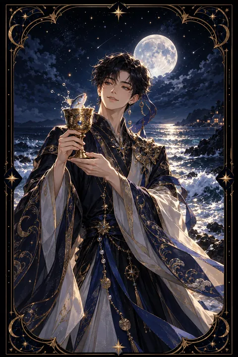

컵 시종 카드 — 설레는 소식과 새 감정
컵 시종 카드 한눈에 보기
컵 시종 카드 상징 읽기

동네보살의 카드 그림은 전통 라이더–웨이트 덱의 뜻을 새 그림으로 옮긴 것입니다. 아래 상징 설명은 전통 덱의 그림을 기준으로 합니다.
바닷가에 선 젊은 시종이 금빛 잔을 들고 있고 잔 속에서 작은 물고기가 고개를 내밀고 있습니다. 물고기는 무의식에서 올라온 뜻밖의 영감이나 감정의 메시지를 상징합니다.
시종은 놀라기보다 흥미롭다는 표정으로 물고기를 바라봅니다. 낯선 감정과 생각을 경계하지 않고 호기심으로 받아들이는 열린 마음을 보여 줍니다.
시종이 입은 꽃무늬 튜닉과 푸른 두건은 부드러운 감수성과 창의력을 나타냅니다. 등 뒤에 넘실대는 바다는 감정과 직관의 깊은 세계이며 시종은 그 바다의 가장자리에서 첫 소식을 전하는 전령 역할을 합니다.
시종 카드는 궁정 카드 가운데 가장 어린 인물로 배움과 시작의 단계를 뜻합니다. 컵 시종은 그중에서도 감정과 상상력의 첫걸음을 상징합니다. 잔잔하게 일렁이는 파도는 아직 거세지 않은 감정, 곧 막 싹트기 시작한 마음을 뜻합니다.
컵 시종 카드 정방향 뜻
정방향 컵 시종은 마음을 설레게 하는 새로운 시작을 알립니다. 뜻밖의 고백이나 반가운 연락, 좋은 소식이 찾아올 수 있는 카드입니다. 작고 소박해 보이는 신호라도 그 안에 큰 가능성이 담겨 있을 수 있습니다.
창의력과 직관이 살아나는 시기이기도 합니다. 문득 떠오른 아이디어나 꿈에서 본 장면이 새로운 작업의 씨앗이 될 수 있으니 메모해 두는 습관을 들여 보세요. 그림, 글쓰기, 음악처럼 감성을 표현하는 활동을 시작하기에 좋습니다.
이 카드는 어린아이 같은 순수한 호기심을 되찾으라고 권합니다. 계산하고 따지기보다 마음이 끌리는 쪽을 가볍게 따라가 보세요. 누군가 수줍게 다가온다면 너그럽게 받아 주는 것도 좋습니다. 작은 설렘을 소중히 여길 때 감정의 세계가 한층 풍요로워집니다.
컵 시종 카드 역방향 뜻
역방향 컵 시종은 감정이 성숙하지 못한 상태를 보여 줍니다. 사소한 일에 쉽게 상처받거나 기분이 바뀔 때마다 말투도 달라져 가까운 사람을 당황하게 할 수 있습니다. 기대하던 소식이 실망스럽게 다가오거나 설렘이 금세 식어 버리는 흐름으로 읽기도 합니다.
창의력이 막혀 아무것도 떠오르지 않거나 반대로 공상에 빠져 현실을 외면하는 모습일 수도 있습니다. 해야 할 일을 미루고 좋아하는 것에만 몰두하며 도피하고 있지는 않은지 돌아볼 때입니다.
그러나 이 카드는 섬세한 감수성 자체를 탓하지 않습니다. 감정에 이름을 붙여 스스로 인식하고 그 감정을 부드러운 말로 표현하는 연습이 필요합니다. 감정 일기를 쓰거나 작은 창작 활동으로 마음을 풀어내면 흐트러진 균형이 돌아옵니다. 기대는 조금 낮추고 표현은 조금 더 솔직하게 해 보세요.
연애에서 컵 시종 카드
솔로라면 풋풋하고 설레는 인연이 다가오는 시기입니다. 뜻밖의 장소에서 호감을 표현하는 사람이 나타나거나 오래 알던 사이에서 새로운 감정이 싹틀 수 있습니다. 상대가 보내는 작은 신호를 놓치지 말고 가볍게 반응해 보세요.
사귀는 사람이 있다면 연애 초반의 두근거림이 다시 찾아오는 흐름입니다. 귀여운 선물이나 짧은 쪽지 같은 소박한 표현이 오래 기억에 남는 감동이 됩니다. 둘이서 낯선 취미에 도전하거나 처음 가 보는 곳을 여행하면 관계에 신선한 활력이 생깁니다. 새 가족 소식과 연결해 읽기도 하는 카드입니다. 다만 감정 표현이 서툴러 오해가 생기지 않도록 마음을 솔직하게 전하는 연습이 필요합니다. 상대의 순수한 마음을 가볍게 여기지 않는 태도도 중요합니다. 사소한 칭찬 한마디를 자주 건네 보세요. 작은 표현이 쌓일수록 관계는 더 부드러워집니다.
재회·속마음 질문에서 컵 시종 카드
재회 질문에서 컵 시종이 나오면 상대에게서 뜻밖의 연락이 오거나 가벼운 안부로 다시 이어질 가능성이 있습니다. 상대도 조심스럽게 마음을 떠보고 있을 수 있으니 무겁지 않은 말로 반응해 보세요. 오래된 사진이나 추억이 담긴 노래처럼 사소한 계기가 대화의 문을 열어 줄 수도 있습니다. 다만 과거의 감정을 그대로 되살리기보다 새로 알아 가는 마음으로 다가가야 관계가 편안해집니다. 처음부터 무거운 약속을 요구하면 상대가 한 발 물러설 수 있습니다. 거꾸로 나온 시종은 한때의 기분에 이끌린 연락일 수 있음을 알려 주므로 상대의 진심을 천천히 확인해 보세요.
일·금전에서 컵 시종 카드
일과 직장에서는 새로운 아이디어와 창의적인 제안이 빛을 보는 시기입니다. 디자인, 기획, 콘텐츠처럼 감성이 중요한 분야라면 기회가 더 자주 찾아옵니다. 새로운 일을 배우기 시작하거나 신입으로 첫발을 내딛는 상황에도 이 카드가 자주 등장합니다. 선배나 동료의 조언을 겸손하게 받아들이면 배움의 속도가 빨라집니다.
돈 문제에서는 큰돈보다 작은 기회가 찾아오는 때입니다. 즐겁게 하던 취미나 손재주가 소소한 부수입의 씨앗이 될 수 있습니다. 다만 기분에 따라 충동적으로 지출하기 쉬운 때이니 사고 싶은 물건이 생기면 하루쯤 미뤄 두고 판단해 보세요. 작은 금액이라도 기록해 두면 새는 돈이 보입니다.
컵 시종 카드는 예일까 아니오일까
새로운 감정과 반가운 소식의 시작을 알리는 카드여서 가벼운 기대에는 예로 봅니다. 뒤집혀 나왔다면 감정이 앞서 판단이 흐려질 수 있어 한 번 더 확인해야 하는 조건부로 읽습니다.
자주 묻는 질문
컵 시종 카드 역방향은 나쁜 뜻인가요?
역방향 컵 시종은 감정이 성숙하지 못한 상태를 보여 줍니다. 사소한 일에 쉽게 상처받거나 기분이 바뀔 때마다 말투도 달라져 가까운 사람을 당황하게 할 수 있습니다. 기대하던 소식이 실망스럽게 다가오거나 설렘이 금세 식어 버리는 흐름으로 읽기도 합니다.
컵 시종 카드가 연애 질문에 나오면요?
솔로라면 풋풋하고 설레는 인연이 다가오는 시기입니다. 뜻밖의 장소에서 호감을 표현하는 사람이 나타나거나 오래 알던 사이에서 새로운 감정이 싹틀 수 있습니다. 상대가 보내는 작은 신호를 놓치지 말고 가볍게 반응해 보세요.
타로 카드는 어떻게 뽑나요?
타로 카드 페이지에서 78장을 섞으면 그중 22장이 펼쳐집니다. 마음이 가는 세 장을 고르면 과거·현재·미래 자리에 놓이고, 한 장씩 뒤집어 자리와 방향에 맞는 풀이를 읽습니다. 정방향과 역방향은 섞는 순간 정해집니다.